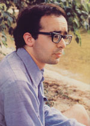

Last November, when Friends of the Earth president David Brower nominated 29-year-old Amory Lovins for the Nobel Peace Prize, darn few people outside the energy policy community had ever heard of Lovins before. But that was a year ago. Since then, Amory Lovins's name has appeared repeatedly in a bafflingly diverse array of publications, ranging from FOE's Not Man Apart to The New York Times, CoEvolution Quarterly, and such staid journals as Science and New Scientist. Amory Lovins, in short, is now a widely read and widely admired man.
The sudden rise in Lovins's popularity began shortly after the publication of his landmark essay, "Energy Strategy: The Road Not Taken? ", in the October 1976 issue of Foreign Affairs ($12 per year-four issues-from 58 E. 68th St., New York, N.Y. 10021). Seldom has a single 10,000-word article been the object of so much controversy ... and so little apathy. Science magazine heralded the piece as "easily the most comprehensive and technically sophisticated attempt to put together an energy program compatible with the environment". Not Man Apart reprinted the essay last November under a banner that said, "The Most Important Issue We've Ever Published". New Scientist hinted that Lovins's statement would become "the cornerstone of the anti-nuclear, pro-renewable-energy movement". And indeed it is becoming just that.
Amory Lovins-make no mistake-has become a force to be reckoned with in matters ofenergy policy. But the question remains: Who is Amory Lovins, anyway?
Amory Bloch Lovins was born November 13, 1947 in Washington, D.C. and spent most of his early childhood in Silver Spring, Maryland. After a distinguished high school career (Amory won awards and citations from General Electric, Westinghouse, the Atomic Energy Commission, and the American Nuclear Society), the young Lovins entered Harvard in 1964, where he studied for two years before transferring to Oxford, England.
Upon completing two years of study at Magdalen College, Lovins became a Junior Research Fellow at Merton College (still at Oxford) and began working toward a Ph.D. degree in physics. Then, in 1971-disenchanted with academic life-he resigned his fellowship, took a Master of Arts degree, and became the British representative for Friends of the Earth ... a post that Amory has held ever since.
For the past several years-in addition to acting as FOE's British ambassador-Lovins has served as a consultant to many of the world's "think tanks" written six books for Friends ofthe Earth, testified before governments, and authored countless papers for a variety of technical journals. As an energy consultant, Lovins lists among his clients the Organization for Economic Cooperation and Development (Paris), the International Federation of Institutes for Advanced Study (Stockholm), the Science Council ofCanada, the U.S. Office of Technology Assessment, the Energy Research and Development Administration , the MIT Workshop on Al ternative Energy Strategies, and several United Nations agencies. This coming spring, Amory Lovins will be a Regents'Lecturer at the University of California at Berkeley.
When Amory isn't writing, reading, testifying, lecturing, attending seminars, or zipping back and forth across oceans, he can sometimes be found giving wilderness tours. ("I like to do about 100 daysof mountaineering a year, " Lovins admits.) And that's where Kas Thomas recently interviewed Amory Lovins ... between stints as a wilderness guide at Camp Winona, near Bridgton, Maine. During the exchange that resulted, Amory revealed himself to be remarkably articulate, disarmingly mild-mannered, genuinely concerned for the fu ture of the planet, and-in general-a very warm human being.
PLOWBOY: Amory, for the benefit of those who don't know you, could you explain how you got into the field of energy analysis? How did a physicist happen to get so deeply involved in energy policy?
LOVINS: Through a series of historic accidents. It's true that I'm basically an experimental physicist, or at least I used to be. I was working toward a Ph.D. in physics at Oxford, in England, during the late sixties. Up until that time, I had been raised to be a normal, healthy techno-twit I didn't much care about environmental issues.
Gradually, though, I began reading about the wider problems in the world. And I started to realize that it wouldn't make a heck of a lot of difference to anybody whether or not I solved the problems I was working on in the laboratory. At the same time, I was becoming less and less able to see myself twenty years down the road as an academic physicist.
At about that time-which is to say, the very late sixties-I developed an interest in a wild part of northwest Wales called Snowdonia National Park. A colleague and I had done a lot of mountain photography there, and a little writing, too. We thought we might be able to recover some of our film costs by selling an article to National Geographic so we wrote to the magazine. And they said, "Well this is nice stuff, but it's not what we publish ... it's too atmospheric. But you might send it to Dave Brower at Friends of the Earth, because Dave likes that sort of thing. He might have some suggestions." So we wrote to Dave, and very much to our surprise we soon found ourselves signed up to do one of Dave's "exhibit format" books for FOE.
PLOWBOY: This was in 1970?
LOVINS: Right, late 1970. In the process of doing the book, during the spring of '71, co-photographer Philip Evans and I became very much involved with Dave Brower and the things he was doing. Also, I was getting to be sufficiently disenchanted with academic science at that point that I was willing to jump off and try something else ... so in May of 1971 I resigned my Junior Research Fellowship at Oxford, moved from Oxford to London, and went to work for Friends of the Earth as their British representative, which involved me in a mixture of analysis, writing, speaking, broadcasting, testifying, and lobbying at all levels, from grassroots to Prime Ministerial.
PLOWBOY: What did you work on during your first couple of years as FOE's British rep?
LOVINS: Mainly the problems of land use and national park policy ... the problems I'd addressed in the exhibit format book, Eryri, The Mountains of Longing.
PLOWBOY: This was the book about Wales?
LOVINS: It's about a part of Wales-Snowdonia National Park-where, several years ago, everything was going wrong at once. For instance, in the early seventies the Rio Tinto-Zinc Corporation wanted to start an open-pit copper mine in the Park and also dredge a very beautiful estuary for gold. Eryri was one manifestation of our disagreement about that, and as a result of the book and several other things that happened, RTZ went away mad. So the copper and gold are still there, or at least the copper. No doubt we'll have a rerun in twenty years.
Anyway, I was working on the problem in Snowdonia, which spread out into areas such as mineral land-use planning law. But then-as time went on, around 1972 or '73-I switched from that to resource policy in general and energy policy in particular, and I did another couple of books.
PLOWBOY: You're talking about Red Alert: Openpit Mining and The Stockholm Conference: Only One Earth ... is that right?
LOVINS: Yes. Meanwhile, my first energy book-World Energy Strategies-went through its first draft early in '73 as a U.N. paper, and-of course) '73 was a propitious time for anything about energy.
The next year, I spent some time putting together a semitechnical assessment of the state of the nuclear art for the Royal Commission on Environmental Pollution, which was doing a study of the nuclear fuel cycle. This material was published early in 1975-together with analyses contributed by John H. Price-in a book called Non-Nuclear Futures.
Then-earlier this year- FOE/Ballinger brought out my third book on the subject, Soft Energy Paths.
PLOWBOY: All right. You've written three energy books in the past several years-six Friends of the Earth books altogether-and you've had numerous articles and papers published in technical journals. But by far your most celebrated piece of work-the one for which you are best known today-is an essay entitled "Energy Strategy: The Road Not Taken?" which appeared in the October '76 issue of Foreign Affairs. Since many of MOTHER's readers haven't seen that piece, I wonder if you could explainbriefly-what it was about, and why that article has been so controversial.
... the rate at which a society gobbles energy isn't so much a measure of that society's success or well-being any more, but rather of its failure.
LOVINS: I'll try. Basically, the essay outlines and contrasts two paths along which U.S. energy policies-or the energy policies of other countries-might evolve over the next fifty years or so. These paths are not forecasts or projections ... rather, they're illustrations. They're not necessarily what will or should happen ... they're a way of visualizing what might happen.
What I said in "Energy Strategy: The Road Not Taken?" is that most of the energy futures one can imagine are basically variations on one or another of two themes. The first theme-which I call a "hard" energy path-assumes that the energy problem facing this country is how to expand supplies-especially domestic supplies-of energy to meet extrapolated demands. According to hard-path advocates, the solution to this problem is to deplete all sorts of depletable fuels faster, whether it's oil, gas, coal, or uranium ... to convert those fuels into premium forms of energy, mainly electricity ... to do that conversion in ever larger, more complex, more centralized, hightechnology plants ... then to distribute the energy through big, centralized distribution networks.
In the beginning of my Foreign Affairs article, I put some numbers into the hard path in order to show people the kinds of commitments such a path entails. The numbers are rather shocking. In a hard path, the year 2000 finds us with 450 to 800 nuclear reactors in this country ... 500 to 800 huge coal-fired power stations ... 1,000 to 1,600 new coal mines . . . 900 new offshore oil wells . . . and perhaps fifteen million electric automobiles. To say nothing of the severe social problems we can look forward to. Problems such as increasing inequity. High technical risk. High vulnerability to the kind of mistake we've just seen in New York City. Very high financial cost ... so high-in fact-that we wouldn't have enough money left in fifty years to pay for the things that were supposed to use all the energy!
PLOWBOY: You're painting a very grim picture ... one that certainly doesn't jibe with the "more is better" philosophy on which so many of us were brought up.
LOVINS: Quite,true. That's why I think that if-as the proponents of the hard path often tell us-there's no alternative to the scenario I've just described, we might as well all go home and forget about trying to create a saner society.
But I believe there's another way to look at the energy problem. . . a way that leads us in a much nicer direction.
PLOWBOY: And that is ...
LOVINS: It's the soft energy path I talked about in the Foreign Affairs article. If you're interested in a soft path, you start with a different view of what the energy problem is ... and you find that it isn't simply a problem of how to expand supplies to meet extrapolated demands. You don't just talk about "future energy requirements". Instead you talk about who's going to require how much of what kind of energy for what purposes for how long. Amazingly, these issues are very new in the energy policy community.
Now if you start with that view, you begin to see that the rate at which a society gobbles energy isn't so much a measure of that society's success or well-being anymore, but rather of its failure. Schumacher's notion of Buddhist economics comes into play here. If your goal is to get someplace, the amount of traffic you have to endure to get there isn't a measure of how wonderful your transportation system is ... it's a reflection of your failure to establish a rational settlement pattern in which you already live near where you wanted to be in the first place! It's the same with energy use.
The whole point of thinking along soft path lines is to do whatever it is you want to do, using as little energy-and other resources-as possible. Once you start with that rather different view of what the problem is, you naturally find that there are other ways to approach the solution.
PLOWBOY: OK. How do you approach the solution?
LOVINS: With a soft energy path based on three components ... components that-when you put them together-form a whole greater than the sum of the parts. The three components are-first-very greatly increased efficiency in energy use ... second, the rapid introduction of what I call "soft technologies", which I'll define in a minute ... and third, the transitional use of fossil fuels to buy the time needed to deploy the soft technologies.
I don't need to say too much about the first component, except that I'm talking not just about increasing the gas mileage of cars or the efficiency of electric toasters ... I'm talking about reducing the enormous losses that occur when you convert primary energy-in the form of coal, petroleum, and so on-into gasoline and electricity. The losses that occur in converting primary energy to end-use energy have been increasing dramatically over the past few decades, and if we do nothing about it these losses will go on increasing until they take up over half of all future energy growth.
PLOWBOY: In other words, one of the biggest energy wasters in our present society is our own energy industry!
LOVINS: Precisely. In Britain, for example, the energy industries are the largest energy consumers. In England, more than half the growth in energy production that's occurred since 1900 has gone to fuel the fuel industries.
PLOWBOY: Wow!
LOVINS: Now obviously, this kind of thing can't be allowed to go on. We can't continue to fuel the fuel industry at an ever-increasing rate, and the rest of society can't continue to consume energy at an ever-increasing rate. It has to end somewhere.
PLOWBOY: I take it, then, you feel that zero or negative growth in the rate of energy use in the U.S. is a desirable and achievable goal.
LOVINS: Absolutely. And of course, that means we're going to have to learn how to do more with less. But it doesn't necessarily mean that we'll have to give up a lot of things that are dear to us. I hear that fear expressed quite often. Some people feel that civilization in the U.S. would be inconceivable if we used only, say, half as much electricity as we do now . . . and yet that is what we did use in 1963, when Americans were at least half as civilized as they are at present.
PLOWBOY: OK. A minute ago, you promised to define the term "soft technologies".
LOVINS: Right. Soft technologies have five defining characteristics. Number one, they're diverse ... that is, we're talking about a large number of individual technologies, each doing what it does best, and none trying to be a panacea. Second, soft technologies rely on renewable energy flows sunlight, wind, vegetation, and the like - rather than on depletable fuels.
PLOWBOY: They rely on energy that's always going to be there whether we use it or not.
LOVINS: Yes. Third, they are relatively understandable, or what Ivan Illich would call convivial. That is, although an ordinary person wouldn't necessarily be able to build a particular soft energy device or have a detailed knowledge of what goes on inside it, he or she would be able to control it. It wouldn't be some mysterious giant lurking over the horizon, but rather an item of everyday activity that would be relatively understandable. My pocket calculator, for example, is technically a very sophisticated device, but I run it... it doesn't run me. That's the sort of social criterion I had in mind.
All right. The fourth and fifth defining characteristics of soft technologies are that they're matched in scale and in energy quality to end-use needs.
PLOWBOY: Perhaps you could explain what you mean by that ... by matching "energy quality" to end-use needs. What does that mean?
LOVINS: Well as you know, energy comes in many different forms, some of which are what a scientist would call "low grade" energy. That isn't a derogatory term ... it just means that the kind of energy in question- lowtemperature heat, usually- can't do difficult kinds of work. Now, there's an awful lot of low-grade energy around. There's more low-grade energy in the Atlantic Ocean, for instance, than there is highgrade energy in all the oil in the Middle East, but you can't do much with it.
By matching energy quality to end use needs, I simply mean that where you have a job that can be done by low-grade energy, you should use lowgrade energy to do that job, and not high-grade energy.
PLOWBOY: Is there much of a need for low-grade energy in this country?
LOVINS: Oh yes. About half of all the energy needed in the U.S. today is required in the form of heat at temperatures below a few hundred degrees Celsius. Altogether something like 58% of our end-use needs are for heat. And only a fraction of that 58% is high-temperature heat.
PLOWBOY: What about the other 42% of our end uses? What kinds of energy do we need there?
LOVINS: Well, about 31% of the remainder is liquid fuels for vehicles, mainly cars. About 3% of our energy is used to run pipelines. It takes a lot of energy to pump things around, you know, especially to pump fuels around. Industrial-type electric motors consume 4% of our energy ... and another 4% is used by all other electric devices: all lighting, electronics, telecommunications, smelting, electroplating, arc welding, electric drive for railways, and home appliances.
PLOWBOY: Hold it ... you mean that all the uses of electricity in this country add up to only four percent of our total energy demand?
LOVINS: No, eight percent. If you count industrial electric motors, only eight percent of our total energy needs are of the kind that must be met with electricity. It turns out, thoughbecause we're using electricity for a good many inappropriate, low-grade purposes-that we're actually meeting 13% of our present energy needs with electricity.
Now bear in mind that the conversion of coal energy into electrical energy is very wasteful. It turns out that for every three units of coal energy-or oil energy, or whatever-you put into a power plant, you only get one unit of electrical energy out. The other two units are lost as heat ... that's just a law of physics. Right now, about a third of U.S. fossil fuels goes to make the electricity we use to meet 13% of our energy needs. And a hard energy path would increase this 13% figure to between 20% and 40% by the year 2000 ... far more thereafter.
We're going to have to learn to do more with less. But that doesn't necessarily mean we'll have to give up a lot of things that are dear to us.
But there's no need to do that. If you match the quality of energy supplied to the quality needed for the task at hand-if you use electricity only for those applications that require electricity-you can save one heck of a lot of fossil fuel, because you can virtually eliminate the horrendous losses involved in converting energy from one form to another. What we've been trying to do in this country, you see, is supply the highest possible quality of energy for everything, whether we need it or not. But we can't afford to do that anymore. It's messy, inelegant, expensive, and dangerous. It's like cutting butter with a chain saw.
PLOWBOY: A couple minutes ago you mentioned that soft technologies are also matched in scale to end-use needs. What does that mean?
LOVINS: It means that where we want to create temperature differences of tens of degrees-as in heating a home-we should meet the need with power sources whose potential is tens or hundreds of degrees, rather than burning fossil fuels at thousands of degrees, or trying to confine nuclear reactions that have an effective temperature of trillions of degrees. To do otherwise is both wasteful and expensive.
If you want proof of this, just look at your electric bill. At least half your monthly payment goes for fixed distribution costs and related overhead: transmission lines, transformers, cables, meters, meter readers, planners, billing computers, etc. Half of your bill. The generation of electricity on a domes tic or neighborhood scale would eliminate-or at least greatly reduce -these distribution costs.
Actually, by using quite orthodox economics, one can show that nowadays it costs less overall to build a lot of little power stations than it does to construct one huge one. This may come as a surprise to power engineers who were brought up to think in terms of classical economies of scale, but those theories don't hold water anymore.
PLOWBOY: Could you give me an example?
LOVINS: Well, for instance: Big generating stations- contrary to what their designers expected-are turning out to be a lot less reliable than small ones. The bigger they are, in fact, the less reliable they are. Also, the big stations' unreliability is a much more grievous fault than it would be in a small station because of the fact that you have to provide instant backup capability for those times when the station fails, and it becomes very difficult and expensive to provide that backup capacity on a large scale.
Then too, the big power stations take a long time to build compared to small ones ... which means they're more vulnerable to longterm interest charges, cost escalations, changes in political climate resulting in design alterations midway through construction, pressure from labor unions, and mistimed demand forecasts ... which is where it turns out that you've built the thing before you really need it and-as a result-it just sits there, eating up loan interest. When you start to add up some of these "diseconomies of scale"-if you willyou find that big stations just don't make economic sense ... let alone any other kind.
PLOWBOY: You don't think, then, that big power stations have a place in the country's energy system?
LOVINS: I'm not saying that at all. I'm saying, rather, that they have an important but limited place which they've already long since filled, and that we can take advantage of the big systems we've got without building more of them. The electric grid we now have, for example, is going to be around for a long time and will prove very useful during the transition to a soft path. But we don't need any more big electric generating stations. We already have about twice as much electricity as we can use to advantage.
And I'd be the last person to say that everything has to be small. It's just as silly-in my opinion-to try to run a smelter with wind machines as it is to heat houses with fast breeder reactors. The object is to crack nuts with nutcrackers and to drive pilings with triphammers, not the reverse.
PLOWBOY: You speak of "the transition to a soft path". What are some of the technologies- soft and otherwise-that you see us using during this transition? What "alternative" technologies exist that we can and should implement right now?
Soft technologies are diverse... rely on renewable energy flows... are understandable... and are matched in scaleand energy quality to end-use needs.
LOVINS: Well, there's a very important class of transitional technologies that use something called fluidized bed combustion, which is a very clean and efficient way to burn practically any fuel. Last May, I visited a fully commercial fluidized bed district heating plant in Enkoping, Sweden, and to give you an idea of what I'm talking about, this plant will burn any kind of fuel: oil, gas, coal, wood, peat, trash, even my energy studies ... it doesn't much care. It will meet Swedish air quality standards, which are tougher than ours, even using high-sulfur coal and no add-on scrubbers. It has a complete two-year guarantee, and there were five international vendors competing to supply the hardware. Most fluidized bed "experts" in this country either haven't heard about the Enkoping plant, or tell me that such a thing couldn't exist yet. They just haven't done their homework.
Then too, there are many proven, worthwhile solar devices on the market or just coming on the market. If I were building a solar house, I think there's enough of a range of solar hardware available now that I could do a good job, although-of course-if it's a new house, I'd want to make it a passive design and just use the heat from people, lights, appliances, and windows, rather than special collectors.
Wind machines are coming into their own now, too. There's a 200kilowatt vertical-axis machine in the Magdalen Islands in the Gulf of St. Lawrence, for instance. It's on the Hydro-Quebec grid. And it's proving to be reasonably economic. I think we'll be seeing a great many more such machines in the near future!
We also already have the technology for converting farm and forestry wastes to fuel alcohols ... these processes have been used for a long time in countries like Finland. Here, I'm afraid I don't have much sympathy for proposals to create big monocultural plantations of special crops that would be harvested and made into methanol. That's just unnecessary. Because if you take all the farm and forest wastes that are already available and convert them using wellestablished processes-to fuel alcohols, you wind up with enough fuel to run the whole transportation sector of the U.S. economy at the best European efficiencies of today ... which is to say, about a factor of three better than we now do.
Now the interesting thing is, we've just covered nearly all the needs of the U.S. energy system. Because all there is is low-temperature heat for buildings, medium- and high-temperature process heat for factories, liquid fuels for vehicles, and electricity. And practically all the electricity we need can come from the existing network of hydro stations ... we don't even need to convert fuels to electricity.
PLOWBOY: How do you answer critics who say that energy storage is a major problem with soft technologies?
LOVINS: I think they've got it backwards. Energy storage is a major problem with hard technologies. It's a minor problem with soft technologies. The reason for this is that with soft technologies, you aren't trying to electrify everything or store large amounts of energy. You would instead be trying-where you needed storage- to store energy at the point of end use, in rather small amounts, and often at rather low quality. Now it's very simple to store low-temperature heat ... you can do it in water or rocks. There might be more elegant ways to do it, but you don't need them.
Again, let's go through the kinds of energy we're talking about. Low- and high-temperature heat would be stored as heat, at the point of end use. That's easy. Liquid fuels would be stored as liquid fuels. That's easy . . . we're already doing it. Electricity would be stored as water behind existing dams. We're already doing that too. That's all there is, except maybe for mechanical energy, which you can always store as compressed air.
PLOWBOY: Compressed air? That's not very practical, is it?
LOVINS: Ithink it is. Some European cities-Paris and Vienna, for example-used to offer compressed air as a standard utility. It ran all the motors in those towns until the turn of the century, when electricity took over. Compressed air is actually a very highly developed technology. I recently looked in the Yellow Pages of the phone book in a large American city, under the heading "Compressed Air", and there were something like six pages of listings!
Compressed air is very handy stuff. It's exceedingly simple and reliable. It's spark-proof, which-of course-is why it's used so much in mining. And it has good torqueing characteristics ... air-powered wrenches are used, for example, in car assembly. Of course, it's also used there because if the workers were to steal the tools and take them home, they wouldn't be able to use them.
Anyway, I think compressed air has been much underrated as an energy carrier.
PLOWBOY: Granted that what you've been saying about soft technologies is true, who's going to bear the cost of deploying small-scale, decentralized technologies?
LOVINS: Well in some cases, individual homeowners themselves will. They're already doing it. In Vermont, for example, about 40% of all the houses in the state have been back-fitted by their owners with woodburning stoves in the past three years. There wasn't a program to do this ... people just did it, because they had the incentive and the opportunity.
Now it's true that if you want to retrofit your house with an active solar heating system it's going to cost you a lot more than a wood stove would, but I think there's a rather simple way around that. It's called a "capital transfer scheme", and it's mentioned in President Carter's energy plan. Here's how it works: If you want to insulate your roof, say, or put up a solar collector, your local utility will lend you the money to do it, and they'll give you the money on the same terms at which they would otherwise lend themselves the money to build power stations. You would repay the loan through your utility bill at your own rate of return, so that your bill wouldn't go up. In fact, once you paid off the loan, your bill would go down since you'd be using less gas, electricity, or whatever. But meanwhileuntil then-you'd be paying the same monthly payments you would have paid if you hadn't installed the equipment at all.
PLOWBOY: But really, isn't that a lot to ask of, say, Consolidated Edison? Why would Con Ed want to help its customers buy solar heating equipment?
LOVINS: I think there's an incentive for both parties. The incentive for the homeowner is obvious: He or she stands to save money and become a bit more self-reliant. The incentive for Con Ed is threefold: First, they'd have to raise a lot less hard-to-get capital this way than if they didn't loan you the money ... because in the latter case, they'd have to build another power station or coal gasification plant or whatever, and they don't know where the money's going to come from to do those things. Second, the payback time on your investment is much shorter-several times shorterthan it would be on Con Ed's investment in a new power plant, so they can turn their money over several times in the same period. Third, a capital transfer
... it's very simple to store low temperature heat with rocks or water. There might be more elegant ways to do it, but you don't need them.
scheme would help Con Ed avoid social obsolescence and make good use of its existing facilities during the transition to a soft path.
So you see, this kind of thing can be a good investment for utilities to get into. It's a better investment than what they're doing now. That's why, for example, Michigan Consolidated Gas Company has joined forces with other gas companies in setting up capital transfer schemes that have already led to the insulation of over 100,000 roofs. It's less expensive for them to do this than for them to find new fields of gas.
PLOWBOY: All right. So we already have the technologies we need to make the switch from a hard to a soft energy path. You've shown that energy storage is not a major problem with soft technologies. And you've suggested that soft technologies can be made economically attractive.
LOVINS: Indeed, some technologies are economically irresistible. Take electrical cogeneration, for example, which is where you tap the process steam produced by industry to do some other job ... and then also use that steam to make electricity. There's a Dow study which says that by 1985, U.S. industry could meet about half its own needs for electricity through cogeneration and that- furthermore -such a plan of action would save $20 to $50 billion in investment, conserve the equivalent of two to three million barrels of oil per day, and obviate the need for f if ty large nuclear reactors!
PLOWBOY: Well if soft technologies are really this attractive, why do we stand here confronted-as Pogo said-by insurmountable opportunities?
LOVINS: I think the reason for that is what-in the trade-we call "institutional barriers", many of whom live in Washington. Institutional barriers make a long list. For instance you have outdated building codes, mortgage regulations that encourage inefficiency, fee structures that give building engineers a fixed percentage of the price of the heating and cooling equipment they install, inappropriate tax laws, imperfect access to capital markets ... I could go on and on.
And don't forget that we have bad information all over the place. Many socalled "experts" don't realize what's happening in their own fields, or in other countries, or even down the hall! I go around in places like ERDAthe Energy Research and Development Administration- and I find I have to tell Mr. X that Ms. Y, who's one floor down and around the corner, has already solved his problem. I shouldn't have to do that.
And of course, on top of everything else, we've got these archaic energy prices which are based on what it has cost, historically, to do things rather than on what it will cost to do them. You see, if you clear away the institutional barriers I mentioned but continue to subsidize energy as we're doing now- so that oil, gas, and other fuels continue to appear artificially cheap-people will still tend not to look favorably on soft technologies.
PLOWBOY: OK. So where do we go from here?
LOVINS: I think there are three initial steps we can-and should- take. First, we need to get busy correcting the institutional barriers we just talked about. It's not going to be easy. There are well over 3,000 building codes in the U.S., for example, and- obviously- it will take a long time to rewrite them ... but look at what happens if we don't rewrite them. That's the point. We end up with much worse problems down the road.
The second of the three things we ought to be doing is remove the subsidies from our conventional fuel and power supply systems, and enforce our antitrust laws. This-of course-is straight-down-the-line orthodox economics. It's nothing radical.
And, third, we ought to be moving toward energy prices based on longterm replacement costs. Again, this is orthodox economics.
As you can see, we're really talking about delving into all the rules and incentives and "habits of thought" -if you will-that govern the way the capital stock of the whole country has grown up . . . and then revamping a lot of them. It's quite an undertaking. And it won't be easy. It'll only be easier than not doing it.
PLOWBOY: What do you think of President Carter's National Energy Plan? Do you feel that it represents a formal commitment to a hard path?
LOVINS: I don't think so. I don't agree with Barry Commoner's analysis of that. There are details of the plan that I would quibble with, but overall I'm encouraged by it. It does-by putting energy conservation first-reflect a complete re-orientation of the American energy policy. That's a good first step.
PLOWBOY: But what about the parts of the Carter plan that deal with nuclear power?
LOVINS: It seems to me-just taking the plan at face valuethat the most significant thing the plan does about nuclear power is that it doesn't bail it out. If you want the nuclear industry in this country to survive, you have to give it a huge shot in the arm-about $100 billion-right away. Carter's plan doesn't do that. That's a very important omission.
What the Carter plan does do is give a boost to several of the things that compete with nuclear power, such as conservation, coal, cogeneration, utility rate reform, and capital transfer schemes. Any one of these five isin my opinion- sufficient to finish off the nuclear industry.
We have bad information every where. Many "experts" don't realize what's happening in their own fields, or in other countries, or even down the hall!
PLOWBOY: I take it then, you feel nuclear power in the U.S. is facing some rough times ahead.
LOVINS: Oh, it's dead. It's dead.
PLOWBOY: You mean it's finished, as of right now, late 1977?
LOVINS: It's dead in the sense of a brontosaurus that's had its spinal cord cut and-because it's so enormous and has all these ganglia near the tail -can keep thrashing around for years not knowing it's dead yet. Two things killed it: One is basic economics. The nuclear industry has only survived so far because it's been assiduously nourished by various subsidies and bailouts. Those are gradually coming to an end. The other thing that's killed it is its own zealous promoters, who never quite understood the gist of Dick Crossman's first rule of successful propaganda ... namely, that the basis for it is truth.
PLOWBOY: What was that name again?
LOVINS: Richard Crossman. He ran the British propaganda campaign during the war and he's always pointed out that propaganda won't persuade anyone unless it's basically true. When the history of this period comes to be written, I think that the people who now consider themselves the foremost advocates of nuclear power will seem to be the people who did it in politically.
PLOWBOY: How is nuclear energy doing right now in the rest of the world?
LOVINS: Much the same as in the U.S. The Japanese industry has completely lost its shirt. The German nuclear industry has been retrenching and is still losing money. The French industry is an arm of the government, so it draws on the treasury ... but otherwise it loses money. The Canadian industry has apparently been losing money. It's hard to tell exactly about the home market ... but certainly on their exports, the Canadians have been losing money. They've been paying their customers to haul the reactors away.
PLOWBOY: You know, all this is kind of funny, because it wasn't so long ago that our energy leaders were pointing at atomic fission as the panacea that would-in a couple of decades- solve all our energy worries forever.
LOVINS: Yes. And now it seems that many people have begun to say the same sorts of things about nuclear fusion. The people who are always saying "something will come along to save us" are now pointing to fusion.
PLOWBOY: What do you think of fusion's potential?
LOVINS: I used to think it would be a good idea to try to build a fusion reactor, but I don't think so anymore, for three reasons.
First, fusion will-at least with the designs we're pursuing now-be rather dirty. It won't be quite as bad as fast breeder reactors, but it won't be clean enough to be attractive. You'll still have the problem of what to do with radioactive wastes. But even if-contrary to most fusion experts' expectationsfusion turns out to be a clean source of energy as advertised, I think we would lack the discipline to use it with restraint. If you ask me, it'd be little short of disastrous for us to discover a source of clean, cheap, abundant energy because of what we would do with it. We ought to be looking for energy sources that are adequate for our needs, but that won't give us the excesses of concentrated energy with which we could do mischief to the earth or to each other.
Which brings me to my second point ... namely, that fusion produces a lot of fast neutrons that could-and probably would -be used to make bomb materials. The kind of fusion research that involves compressing pellets by means of high-energy lasers is a technology that I think should be abandoned immediately because of its very worrisome military implications.
Thirdly, fusion is nothing but a very clever way to do something that we don't really want to do. That is, it's just another complex, costly, slow-todeploy, centralized, high-technology way to make electricity. And that's not what we need.
PLOWBOY: If we don't need more ways to generate electricity, why is the Energy Research and Development Administration spending so much money on the solar conversion of electricity these days?
LOVINS: Beats me! A little over a year ago, you know, the ERDA people said that solar technologies cannot be considered to have a major long-term impact unless they're electrified. That's just nuts! Right now only about eight percent of our end-use energy needs can be justifiably met with electricity, and it doesn't make sense to try to fit the other 92% into that mold.
I think most of the ERDA solar money is misdirected, and it's not clear to me on the face of it whether ERDA is actually advancing or retarding solar technology. Some people-Steve Baer, for instance-think ERDA should be abolished, and I don't reject that view out of hand at all.
PLOWBOY: It seems-from most of what you've been sayingthat you don't put a great deal of faith in so-called energy "experts" and government agencies when it comes to finding solutions for our energy problems.
LOVINS: Right. I've often said that the basic issues in energy strategy today-far from being too complex and technical for ordinary people to understand-are, on the contrary, far too simple and political for the experts to understand. Our "experts" don't really comprehend the nature of the problem. As I mentioned at the beginning of this conversation, the fundamental questions of who's going to require how much of what kind of energy for what purposes for how long are only just now beginning to be asked in the energy policy community.
I think there's a real danger in leaving energy policy to technical and economic "experts". Our leaders don't really understand the issues. And they don't understand the choice that's now before them. We stand at a crossroads, and without decisive action soon, our options will slip away.
PLOWBOY: You mean the soft and hard energy paths are mutually exclusive? It's one or the other?
If you ask me, it'd be little short of disastrous for us to discover a source of clean, cheap, abundant energy because of what we would do with it.
LOVINS: Yes. That was one of the key points I tried to make in the Foreign Affairs article. We must make the transition to a soft energy path soon, or else we will- in two or three decades -have already used up the resources we need to get there. If we don't start building a bridge to a soft-path future now, we may well find-in the year 2000-that we've delayed the use of soft technologies until the bridge to them has been burned. We may find that we've sunk the capital we needed to solar-heat our homes and insulate our roofs into giant nuclear reactors that can never pay us back. We may find we've trained a lot of nuclear fusion and fission engineers, and not enough organic conversion engineers. We may find that the institutional barriers we didn't attempt to change when we could have changed them are no longer changeable!
We can't go on believing that fusion or fission or some other godsend is going to solve all our energy problems "in just a few more years". We can't go on thinking that because the oil companies and big government are-if you believe their ads-doing so much to solve the "energy crisis", that we needn't even insulate our roofs or conserve gasoline! But that's not really true. The time for action is now. We haven't a minute to spare.
Some people say that a soft energy path entails mainly social problems and a hard path mainly technical problems, and that since-in the past we've been better at solving the technical problems than social ones, those are the kind of problems we should incur now. But the hard path, too, involves difficult social problems ... we can't escape them any longer. It's a matter of which kinds of social problems we want.
I think it's time we come to grips with this fact. The most important, difficult, and neglected questions of energy strategy are not mainly technical, but rather social and ethical. They will-no doubt-pose a supreme challenge to the adaptability of our democratic institutions and the vitality of our spiritual life. But I believe we can meet this challenge. We must, for we shall not have another chance to do so.
Amory Lovins's books-Eryri, The Mountains of Longing ($14.95), Red Alert: Openpit Mining ($1.75), The Stockholm Conference: Only One Earth ($3.95), World Energy Strategies ($4.95), Non-Nuclear Futures ($6.95), and Soft Energy Paths ($6.95)-can all be ordered from Friends of the Earth at 124 Spear St., San Francisco, Calif. 94105. If you're a resident of California, add 6% sales tax to your order... and regardless of where you live, be sure to include 750 extra per book for postage and handling. -The Editors.
|
 |
|
|